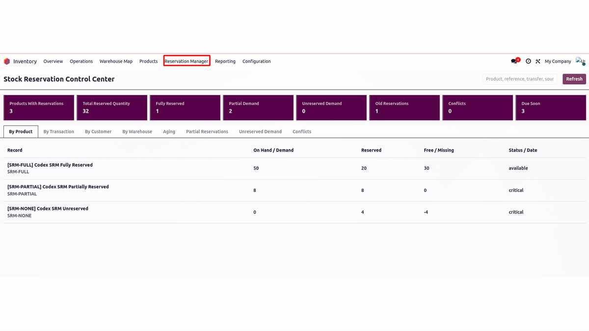
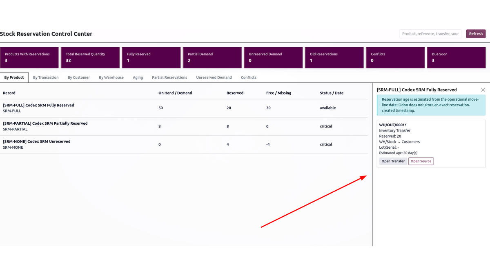
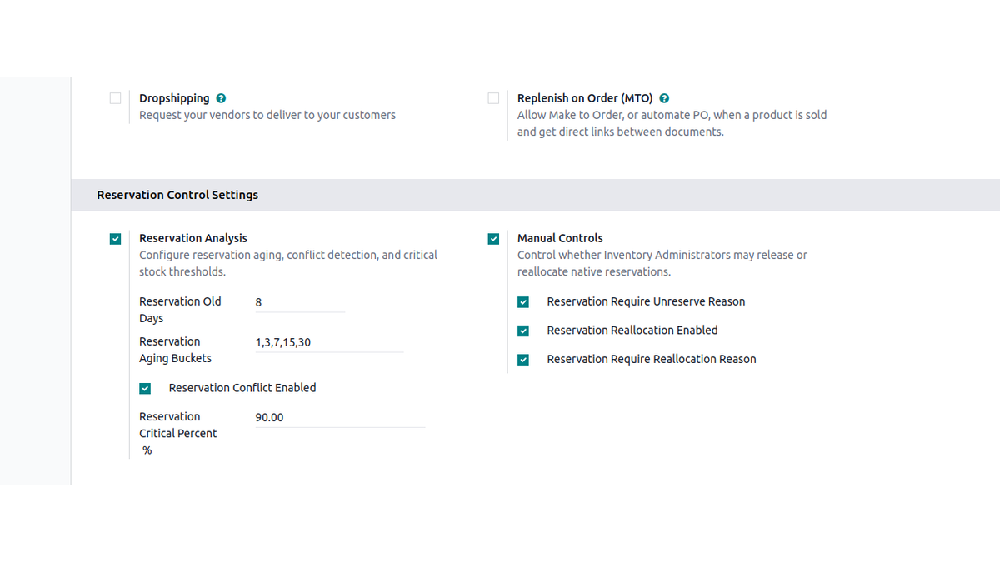

Turn scattered stock reservations into one operational control center. Understand what is reserved, where it is allocated, which demand is at risk, and who changed a reservation—without creating a parallel stock ledger.
A healthy on-hand balance does not always mean stock is free to promise. Sales, manufacturing, repairs, and transfers can compete for the same inventory. This module gives inventory teams a single, searchable view of native Odoo reservations and highlights shortages before they become fulfillment delays.
Reads active stock.move, stock.move.line, and stock.quant records. It does not maintain a duplicate reservation balance.
Compare demand, reserved quantity, free stock, reservation age, customer exposure, and warehouse utilization from one screen.
Permission checks, quantity snapshots, reasons, and immutable audit entries support safer manual reservation operations.
The animated tour cycles through the reservation dashboard, product drill-down, and configuration options.

Number of distinct products that currently have positive, unpicked reservation lines.
Total quantity represented by active native reservation move lines across the allowed companies.
Active product demand whose reserved quantity meets or exceeds its requested quantity.
Demand with some stock reserved but still missing quantity, helping teams focus on incomplete fulfillment.
Confirmed active demand that currently has no reserved quantity.
Reservations whose operational move-line date exceeds the configured old-reservation threshold.
Products with competing active demand where aggregate demand exceeds stock in the selected reservation context.
Reserved active demand scheduled within the next two days.
The default landing view. Shows on-hand, reserved, free quantity, reservation count, utilization ratio, and critical/available status for each product.
Lists active stock demand with reference, origin, requested quantity, reserved quantity, missing quantity, date, priority, state, and resolved source document.
Groups active reservations by customer and summarizes reserved quantity, distinct products, and affected transfers.
Compares warehouse on-hand, reserved, free stock, and reservation utilization ratio.
Groups reservations into configurable age ranges such as 1, 3, 7, 15, and 30 days. Reservation age is clearly identified as an operational estimate.
Isolates partially available moves so planners can see exactly how much is still missing.
Surfaces active moves with zero reserved quantity for availability review and follow-up.
Highlights products where multiple active demands compete for insufficient available stock.
Select a product to inspect the reservation lines behind the totals. Open the related transfer or source document directly from the side panel.

Source and destination locations, transfer, origin, resolved source document, and product demand.
Reserved quantity, lot/serial (always visible), package, and owner information where available.
Move state, priority, scheduled date, reservation date proxy, and estimated age in days.

Release all or part of eligible unpicked reservation lines. The service re-reads records immediately before mutation and rejects picked, completed, cancelled, unauthorized, or changed reservations.
Preview the expected target impact, release an eligible source reservation, and let Odoo's native assignment engine reserve the target demand. A particular quant or lot is intentionally not guaranteed.
Records user, company, action, product, source and target moves, quantities before/changed/after, reason, notes, and actual result. Audit entries cannot be edited or deleted.
Uses native access rules and allowed-company context. Visibility is available to Inventory users; reservation mutations and audit history are restricted to Inventory Managers.
Inventory Managers can now complete the reservation-control workflow directly from the dashboard. Every confirmed action creates an immutable, company-isolated audit entry.
Open By Transaction, Partial Reservations, or Unreserved Demand and click Check Availability. Odoo runs its native assignment logic for that stock move and records the quantity before and after.
Open a product and select one or more active reservation lines from the detail panel. Use Select All when the same product has several reservations.
Release one line, bulk-release several lines, or select exactly one line for reallocation. Reallocation filters targets to active moves for the same product and company and requires a preview before confirmation.
Filter the immutable history by action, user, product, transfer, or date. Review the source document, target move, quantities, reason, notes, and actual result.
✓No parallel stock balance
✓No direct writes to stock.quant quantities
✓Native Odoo ORM synchronization for move lines and quants
✓Source resolution for sales, manufacturing, repairs, transfers, and stock moves
✓Responsive interface with light and dark theme support
✓Search by product, internal reference, transfer, or origin
Place stock_reservation_manager in an Odoo addons path.
Refresh the Apps list and install Stock Reservation Manager & Control Center.
Navigate to Inventory → Reservation Manager and configure controls under Inventory Settings.
Dependencies: Inventory, Sales Inventory, Manufacturing, Repairs, and Product Expiration Dates.
For installation assistance, configuration questions, or technical support, contact our support team.
erpmitchellodoo@gmail.com